Surface Reconstruction for Unstructured Meshes
Daniel W. Zaide
Rensselaer Polytechnic Institute
Joint work with and Carl F. Ollivier-Gooch (UBC)
PDF Version
Introduction
Problem: take an arbitrary pre-existing mesh and insert a prescribed internal boundaries into its topology.
Goal: obtain internal boundaries with minimal mesh modification
Motivation: remeshing to match the surfaces of a newly deposited layers of material in the simulation of the semiconductor device manufacturing process.
Other Approaches to Similar Problems
Mesh Cleaving (Levine, Clemson, Whitaker, Utah)
- Builds a background unstructured mesh based on density of [biomedical] data, and conforms it by moving points using a template.
- "Provable" quality bounds, though in practice, not great, especially for non-manifold domains.
- Works well with level set data, but does not easily conform to prescribed boundary curves.
- Requires initially "well-sized" initial mesh.
Other Approaches to Similar Problems
Universal Meshes (Lew, Stanford)
- Starting with a initially uniform unstructured mesh, conform boundary.
- Can prove the mesh is boundary conforming (for conditions on the geometry).
- Requires post-processing for smoothing, and no guarantees for quality.
- Not yet extended for arbitrary unstructured meshes, nor conforming internal boundaries.
Other Approaches to Similar Problems
Both other methods rooted in Isosurface Stuffing.
Both face the challenge of moving existing points onto the surface.
Our approach is closer to traditional mesh generation, using point insertion.
Our challenge is in surface recovery.
Review - Our Approach

Surface Sampling - Length Scale
Define the length scale of a $d$-dimensional vertex by summing over adjacent simplices $$LS(v) = \left(d\sum^N_{i=1} {V_i}\middle/ \sum^N_{i=1}{\theta_i}\right)^{\frac{1}{d}}$$
Where $\theta_i$ is a solid angle, and $V_i$ is the volume (area) of the simplex.
The length scale at any point in the mesh can be determined using bary centric interpolation inside its containing simplex.
Surface Sampling - Boundary Curves
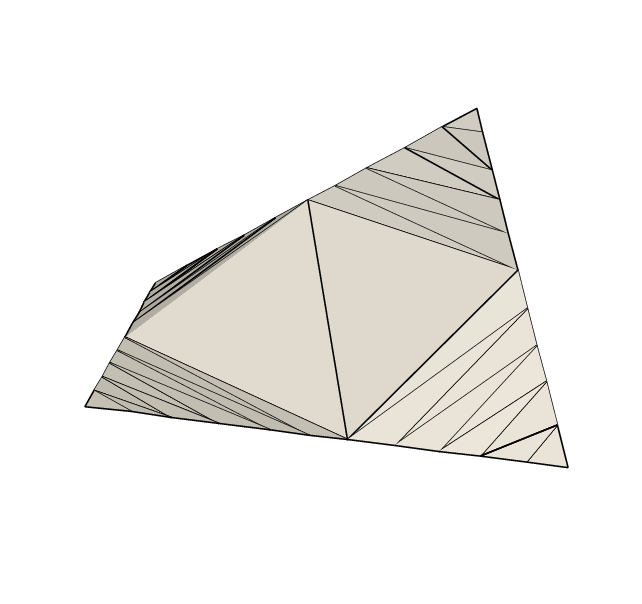 Define the computational domain by $\xi$ running from 0 to N, and the length of the curve in this space as $\ell = \ell(\xi)$ and solve the following to equidistribute points $$ \ell_i^{n+1} = \frac{LS\left(\ell_{i-\frac{1}{2}}^{n+1}\right)\ell_{i+1}^n+LS\left(\ell_{i+\frac{1}{2}}^n\right)\ell_{i-1}^{n+1}}{LS\left(\ell_{i-\frac{1}{2}}^{n+1}\right)+LS\left(\ell_{i+\frac{1}{2}}^n\right)}$$
Surface Sampling - Surfaces
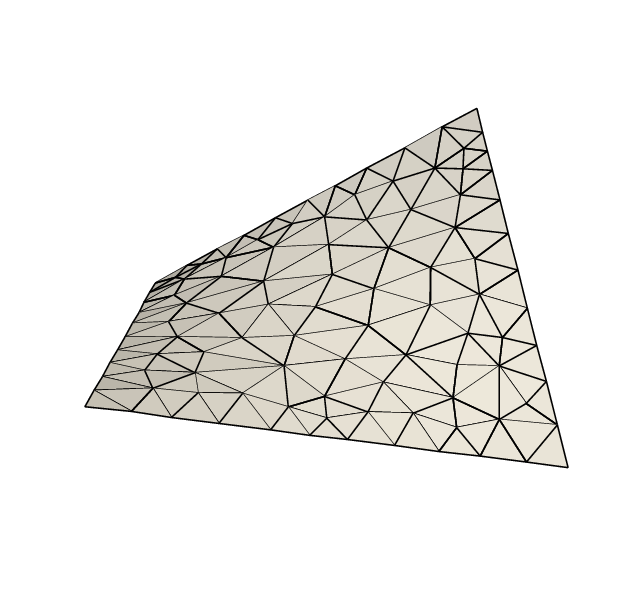 Once the boundary curve has been sampled, refine the surface mesh until the following is satisfied $$\sqrt{2}r_{circum}
< \frac{1}{3}\sum_{i=1}^3 LS(\mathbf{x}(v_i)$$
Vertex Removal
After sampling, vertices that are either within 1/2 length scale of a sampled vertex or would encroach on the face are removed
We rely on being locally Delaunay to guarantee recovery
A 2D example
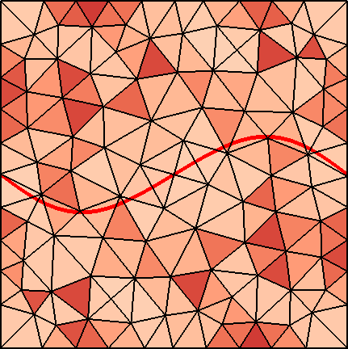Initial Mesh, 121 Vertices.
Minimum angle: 44.02$^\circ$.
Cubic Spline in red.
A 2D example
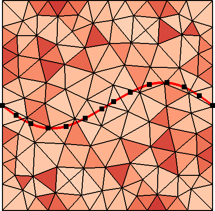Sample for new points based length scale of underlying mesh.
Length scale is a measure of distance to neighboring vertices.
Vertex locations in black after optimization performed.
A 2D example
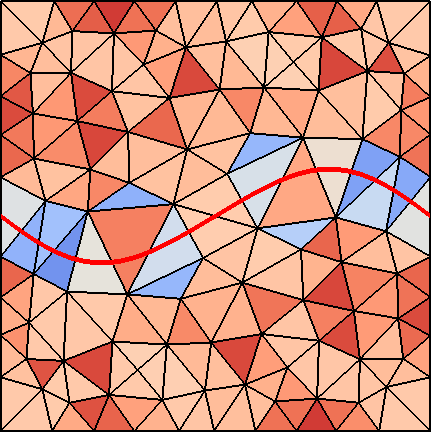With the locations of the new vertices on the curve known, remove vertices too close to the curve, one at a time to maintain a connected mesh.
A 2D example
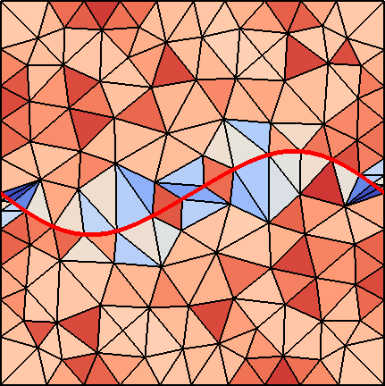With vertices near the curve removed, insert the new vertices into the the mesh
Small angles are protected at this stage, to ensure termination of the refinement algorithm.
A 2D example
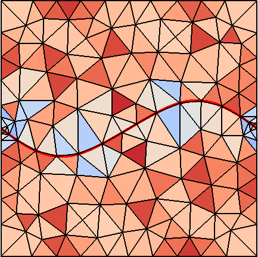Finally, by swapping edges, recover the curve and assess mesh quality.
The final mesh has 140 Vertices, with 89% of the initial vertices unchanged and minimum angle: 29.57$^\circ$.
A 3D example
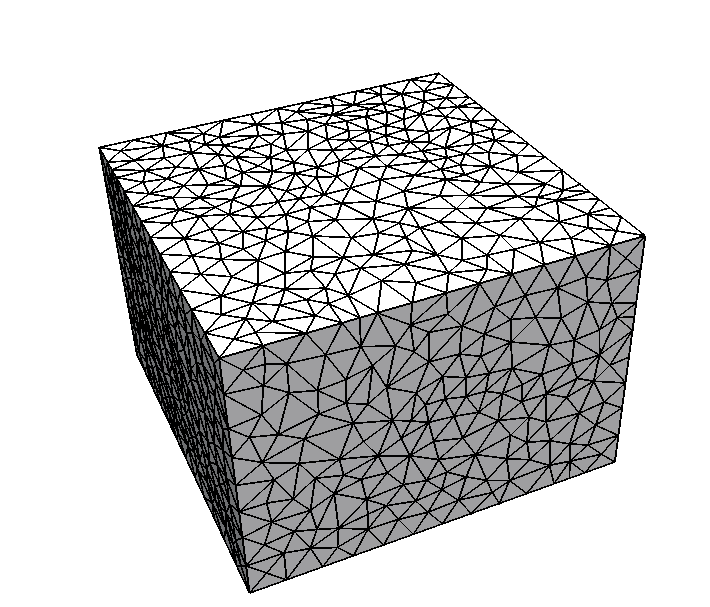Initially, an isotropic mesh is created.
A 3D example
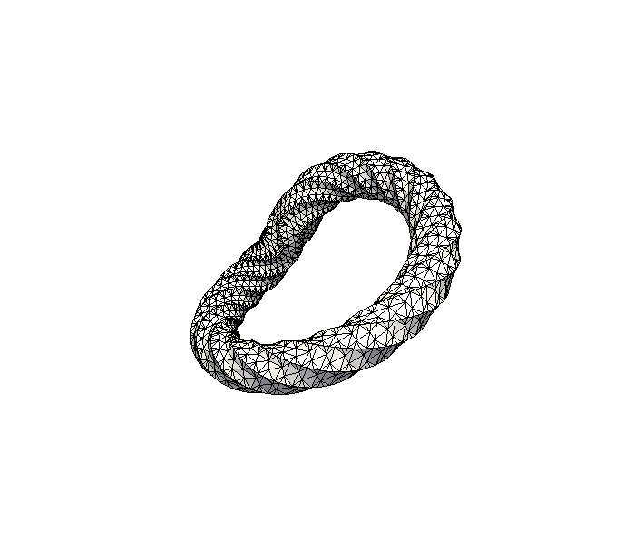The surface to insert is defined as a cubic bezier surface, though any geometric representation is valid.
A 3D example
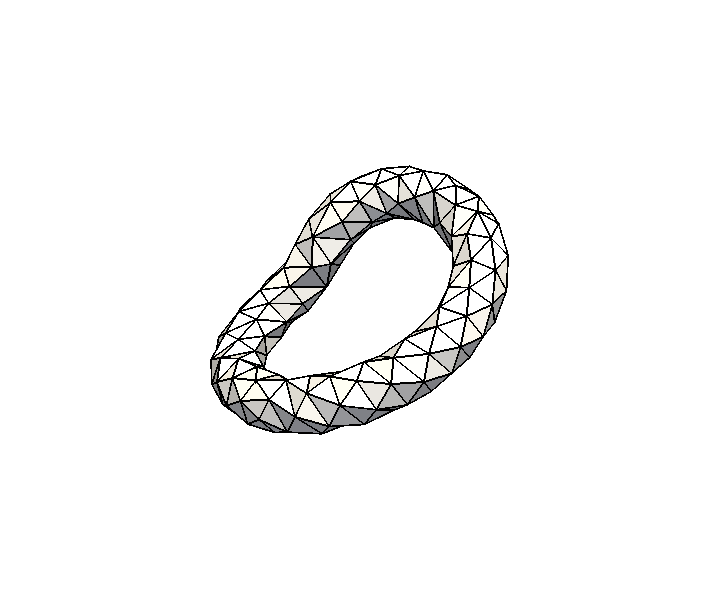The surface is sampled based on the length scale of of initial mesh.
A 3D example
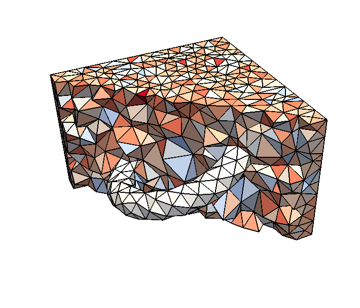After vertices are removed, the surface is inserted and the final mesh is shown.
Extensions
Inserting curves/surfaces into 2D/3D Isotropic Meshes that intersect with existing internal boundaries.
Sampling extended to sample along internal boundary intersections.
Extensions - 2D Initial
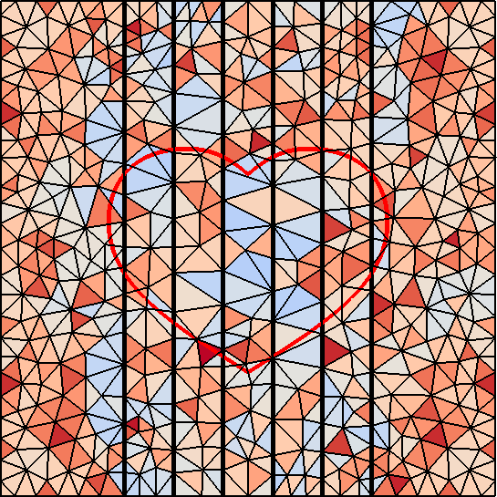Extensions - 2D Final
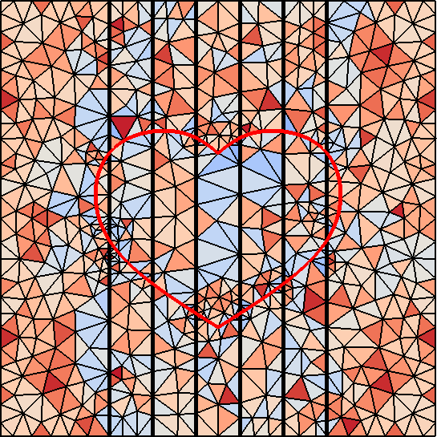Extensions - 3D Initial
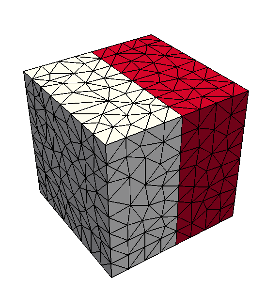Extensions - 3D Sampled

Extensions - 3D Added Intersection

Extensions - 3D Final
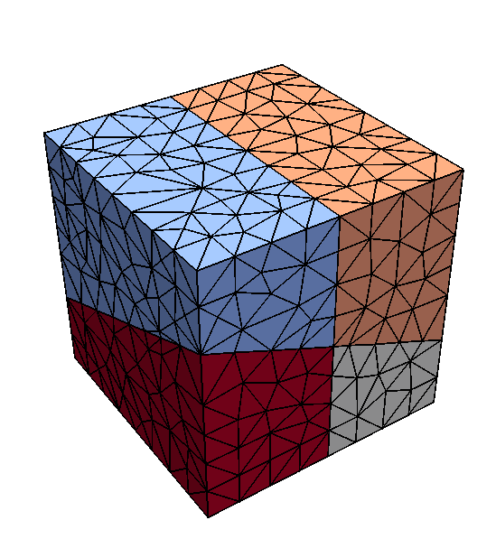Extensions -3D Final
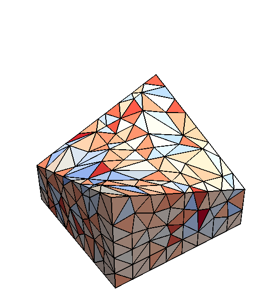Extensions
Inserting layers into 2D/3D Isotropic Meshes
Insert one surface, project sampling onto second nearby surface and build thin layer between.
Can contain prismatic elements (quadrilaterals) in between.
Extensions - 3D Initial
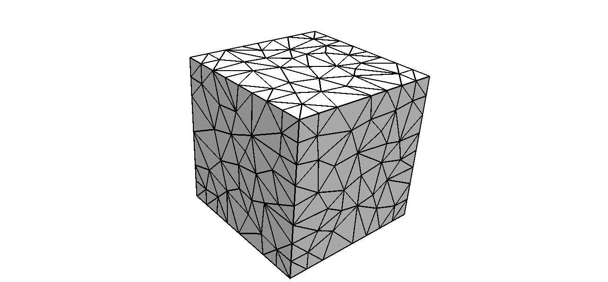
Extensions - 3D Surface
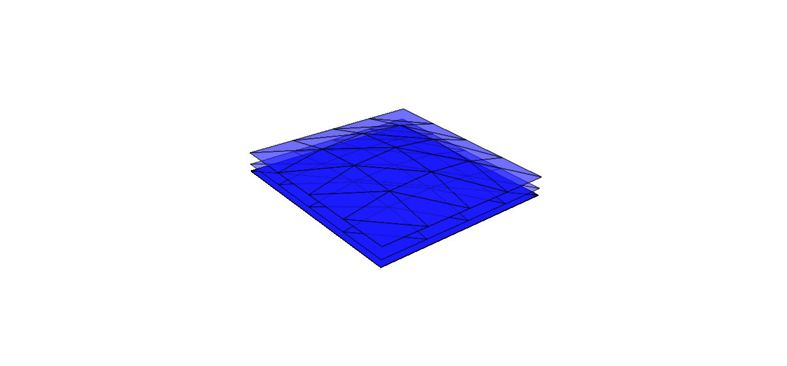
Extensions - 3D Sampled

Extensions - 3D Final
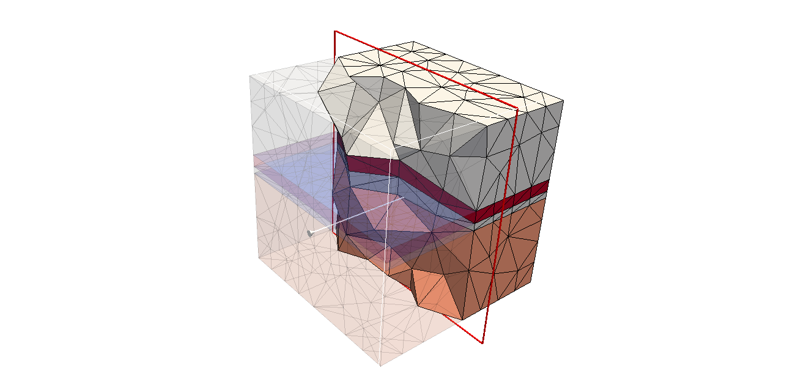
Extensions
Inserting curves into 2D Anistropic Meshes
Replaces length scale function with metric based function using second moment of area on initial mesh (or original metric, if known)
Extensions - 2D Aligned Initial
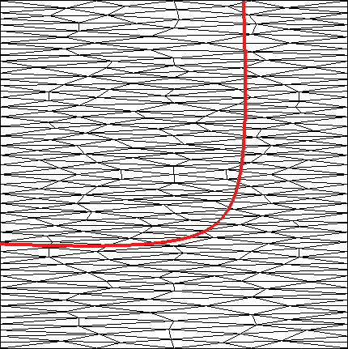Extensions - 2D Aligned Sampled

Extensions - 2D Aligned Sampled
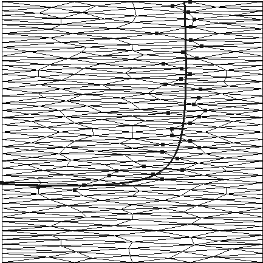Extensions - 2D Aligned Final
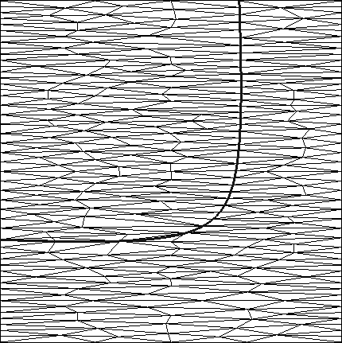Extensions - 2D Diagonal Initial
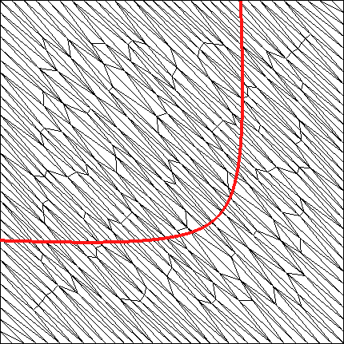Extensions - 2D Diagonal Final
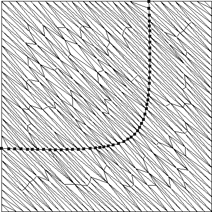Current Work
| Within the current algorithm, extensions come naturally.
Current focus on inserting into quasi-structured anisotropic meshes. |
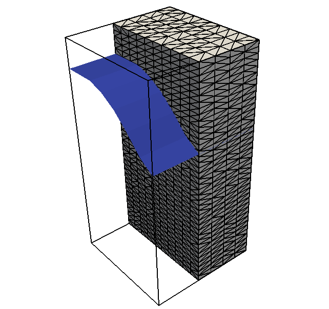 |